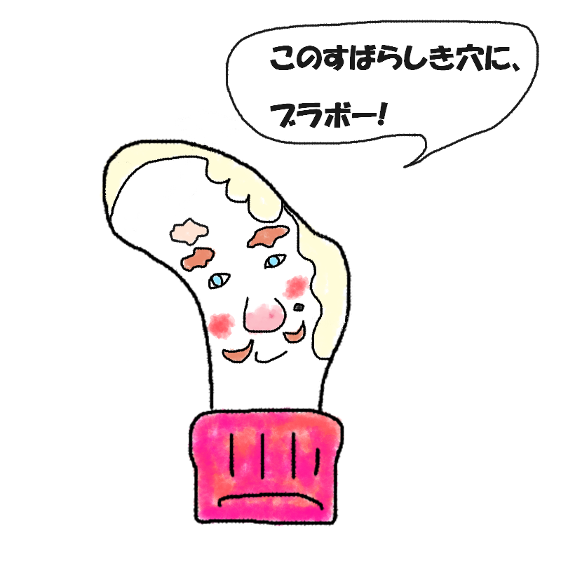

あなたの診断結果
？ ？ ？ （キャラクター名前募集中）足の甲の骨が出っ張っている
箇所にあく人
【標高No.1の高みから見下ろす！
すべてをさらけだしても気品を失わぬ
孤高の貴族タイプ】

「ふっ、そこをどきたまえ。
……って、おい！ 靴紐をそんなに強く締めないでくれ！」
労働や泥臭さとは無縁の「高みの見物」ポジション。すべてをさらけだしてもなお、生まれ持った気品を一切失わない高貴な魂！
あなたは、「足の最高地点から世間を優雅に見下ろし、どんな運命のいたずらにも気高さを崩さない
生粋の貴族タイプ」です。
地面を蹴りつけて歩くような労働とは完全に無縁のワールドで生きており、縛るものは何もない自由で軽やかな気質を誇っています。
しかし、その突出した高みゆえの宿命として、シュータンや靴紐からのダイレクトなプレッシャーだけは常に受けており、
「いや待て、もう少し優しく結んでくれないか……」
と優雅な顔をしながら内心で冷や汗をかいているのがチャームポイント。
そして何よりの特筆事項は、ここに万が一の「穴」が空いてしまったとき。構造上、隠すすべはゼロ。完全なる丸見えの致命傷です。
だからこそ、どれほど無防備にすべてをさらけだすことになろうとも、あなたの気品が揺らぐことは一切ありません。
丸見えの穴から我が物顔で皮膚がのぞいていようとも、「ふっ、これもまた新しいオートクチュールのデザインなのだよ」と微動だにしない圧倒的なロイヤル感で周囲をねじ伏せます。
孤高の貴族の生態
- 足の中で最も高い標高を陣取り、常に全人類を見下ろしている（物理的にも精神的にも）
- 基本は自由気ままで縛られない気質だが、靴紐の強さに対してだけは細心の注意を払っている
- 一度穴が空くと隠しようがないため、むしろ「隠さない美学」へと昇華させる
- どんなにボロボロの状況に陥ろうとも、漂う気品と優雅さだけは一厘たりとも失われない
高い場所から世界を見つめ、すべてをさらけだしながらも美しく佇むあなた。
その誇り高きお殿様・貴族の気質は、この俗世においてまばゆい光を放っています。
最後にひとつ。
どんなに靴紐が強く締められようとも、どんなに隠せない穴が空こうとも。
その高貴なる気品を胸に、今日も優雅に高みを歩け！
このキャラクターに名前をつける
思いついた名前を教えてね！
※このスタンプには日陰に消えたボツキャラが混ざっています
※この診断はただのお遊びです。
※靴下の穴が開く場所には個人差があります。